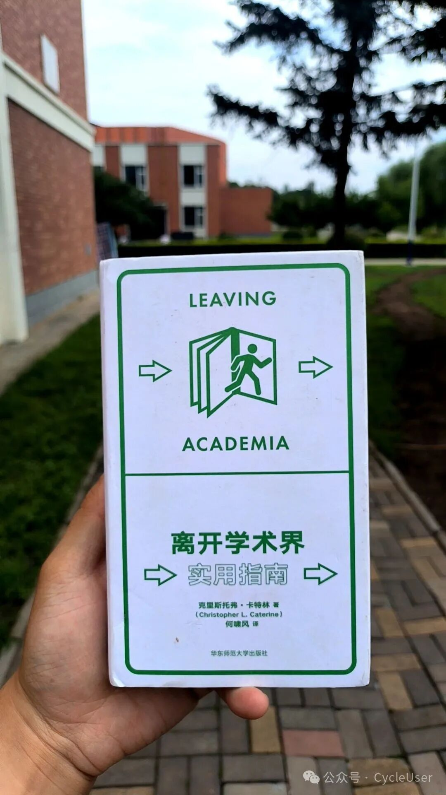

从文件存储到数据库：分享一下数据管理的大体脉络
Tue 01 September 2026
·
Programming
从文件存储到数据库：分享一下数据管理的大体脉络
有没有想过，网店、后台、手机里那堆 App，数据到底存在哪儿？答案很简单 …
有没有想过，网店、后台、手机里那堆 App，数据到底存在哪儿？答案很简单 …
晚上去食堂其他档口都没什么吃的了，只能去吃麻辣烫，看到店家的小孩睡在几把拼在一起餐椅 …
Java 是一门面向对象的语言，"一切皆对象，一切皆类"。它采用"编译 + 解释"混合执行方式：源码先编译成字节码，再由 JVM 解释或即时 …
原文: Hicks, M.T., Humphries, J. & Slater, J. (2024). ChatGPT is bullshit. Ethics and Information Technology, 26:38. https://doi.org/10.1007/s10676-024-09775-5
用过大语言模型的人大概都有过这样的经历：它前一秒还在 …
每年毕业季都有一个很折磨人的事情：上级部门通知限期完成毕业论文材料核查，要求比对同一学生在系统中提交的所 …
测一个模型的"单轮对话能力"很容易，测一个模型"能不能 …
单张 7900XTX 24GB 上实测 22 个开源模型，对标 GPT-3.5 与 GPT-4o。发现开源已追平 2024 …
现在总有人说，本地部署模型可能越来越没必要了——在线模型那么便宜，调用一次没几个钱，何必自己折腾硬件。之前这话大 …
总有人说本地模型没意义。这种考量如果只从自己的需求出发，可能过于武断，甚至有些自大。不同的人、不同的场景，有不同 …
先说结论：
Liquid AI 的 LFM2.5-350M 最近在 Spark Arena https://spark-arena.com/leaderboard 上长期居于速度榜首。这个模型在 Ollama 上可以直接拉取：
ollama pull LiquidAI/lfm2.5-350m
只有 379MB，Q8_0 量化，354.48M 参 …
低配机器的本地模型，绕不开一个矛盾：模型越小跑得越快，但能力也越弱。在一些不具备大显存独显的设备上，"超小模型"（参 …
此前已对比过 Ollama、oMLX、MoXing 三条推理路线，关注的是推理速度。但推理速度只是工程问题，真正决定模型是否可用的是模型本身 …
近年来接触了不少初学 Python 的朋友，发现几种常见做法会带来一些困难：
对于手头只有一台最低配 MacBook Air（M4，16G 统一内存，256G 硬盘）的朋友来说，能不能本地跑一个 9B 模型，还能不能用起来？答案是可以 …
这篇文章是我给大一同学们的一些计算机使用方面的建议。不是什么高深的技术，都是踩过坑之后攒下来的经验。
给大一新生讲路径，其实是为了环境变量这个概念，很多新生朋友一开始接触的时候容易懵。一直想找一个比较通俗的方 …
现在AI编程工具越来越多了，不少朋友觉得，反正有智能体帮忙写代码，大学生自己还学什么编程语言呢。这其实是得考虑考虑的。
咱不是说非得 …
对于老鸟来说，本地部署模型，肯定是vllm或者sglang又或者llama.cpp之类的。 但对新手来说，可能还是Ollama更为友好简单。 考虑到很多古老设备可能未必有高性能的GPU，而 Ollama 上 …
编程语言对于不太熟悉的朋友来说可能觉得挺玄乎，其实说白了，就是人和机器之间说话的规矩。计算机用电路，底层来看 …
先说清楚，这篇文章不是讲相声艺术的。我对相声毫不理解，完全不懂，也很少接触。传统相声里的贯口、柳活、腿子活这些门道 …
你有没有想过这样一个问题：你手机上某张"图片"，在计算机内部到底是一堆什么？答案是：一堆 0 和 1。不是"一堆像 0 和 1 的 …
在开始之前先说明一下：这篇文章讲的不是"怎么用 AI 炒股"，而是"怎么用 opencode 这类 AI 编码助手，把一堆散落各处的商业信息，快 …
2016年7月17日，中国传媒大学的在读博士雷霄骅同学，猝然离世。2016年7月20日，中国地质大学（北京）毕业的罗明非博士，在西藏的野外工作中遇险离 …
想当年，我因为种种原因从理科基地班被人清退了，跑到了普通的班级。有一门课，我大半学期都没赶上，可期末还得参加考 …
上课的时候，会经常跟大家提《纪效新书》里戚继光将军讲的一句话，叫"心有外物而不化，自恃旧习以为佳"。
先把话说清楚，这话 …
我毕业的时候已经三十出头了，现在四十来岁了，大概算是标准的中老登。这十来年有个现象挺有意思：很多人见了我，猜的 …
最近和几位朋友聊到一个话题，涉及到生物电、膜电位和发育生物学的内容。这是一个我并不熟悉的领域，但讨论中出现了 …
之前写过好几篇关于OpenCode的文章了。
有的同学可能有过这种感觉。刷到一条朋友圈，同学拿了奖。听到一个消息，比你小两届的学弟发了顶刊论文。看到一篇推送 …
前几天我儿子闹了个别扭。我买了果汁回来，他本来挺高兴要喝的，他妈妈跟他说先把作业做完再喝吧，果汁正好凉，放一会 …
我们日常接触的维度都是整数：线段是 1 维的，正方形是 2 维的，立方体是 3 维的。这个东西很直观——你从小到大在黑板上画 …
大家基本都知道二进制是怎么回事了——0 和 1，每一位代表 2 的几次方。但光知道二进制表示数字还不够，还得知道计算机 …
原创
无论是大学生还是其他的朋友，生活不能只学习和工作，也该有些娱乐。
之前关于Open Code的文章都是要么是编程写代码要么是上课学习记笔记要么是写简历找工作或者读研面试，都太严肃了。
今天乐呵乐呵，这回 …
大家中学的时候大概就都知道了二进制是怎么回事，也基本能粗略理解内存和硬盘的区别。今天聊两件事：操作系统是什 …
有一种消息，你收到的时候心里会咯噔一下。
「在吗？」
就两个字，没有上下文，没有前因后果，不知道对方要干什么。你回了「在」，对方 …
中学物理课本在讲流体力学的时候，有一个经典的解释：飞机机翼上面弧度大、路程长，下面平直、路程短。空气从机翼前缘分 …
最近假期在外面学习，就有一些其他院校的同学问我，说自己是学文科的，或者学工科的，到了大学之后除了专业课之外，还 …
吃饭的时候听到有人讨论最近上映的某个电影里的桥段，大概是说影片里面有两个人吵架，一个说我参加这项运动就是 …
前面写了一篇怎么从零创作技能的文，这回再写一个新技能的构思过程：帮人学习的技能。
学习这件事的第一步，其实不是 …
古代有先哲说人应该有一种赤子之心。看到小朋友天真烂漫的样子，经过深刻的思辨推导出人性本善，这种想法值得尊重 …
先说清楚：这篇文章不是提倡用英文缩写。恰恰相反。
钱钟书有个牙缝韭菜的典故——说话的时候牙齿上沾着一片韭菜，自己不 …
很多人小时候都听过一个解释：机翼上面弧度大、路程长，下面平、路程短。空气分子在机翼前缘分开，为了在后缘同时会合，上 …
前面有很多跟OpenCode相关的一点经验分享给大家：
前面有很多跟 OpenCode 相关的一点经验分享给大家：
大胖哥 大胖哥
先说清楚，这里说的"提问的智慧"不是当年那篇经典文章。
当年那篇讲的是，遇到系统报错、软件闪退、代码报 bug …
前面说了 opencode 能帮你搜教程、下视频，也能帮你补上课没听懂的知识点。
那更复杂的事儿能管吗？
比如我有一堆杂七杂八的资 …
原创
有人天生话少，有人喜欢独处。这都没问题。
但还有一种情况——你遇到需要沟通的事就紧张。跟人说话紧张，表达想法紧张 …
上一篇讲清楚了产状的数学计算。链接如下：
https://blog.cycleuser.org/%E4%BA%A7%E7%8A%B6%E6%B5%8B%E9%87%8F.html
点击访问原文也可以直达。
这篇记录 …
最近高校都在抓师德师风、教风学风。师德师风是立身之本，这没得说，干这行就得守这行的规矩，容不得一点瑕疵。我想说的 …
我作为高校教师建议大一开学要有电脑，还要安装OpenCode使用智能体，而且之前一篇还说了 opencode 的四种用法与为什么我推荐命令行。
有同学 …
2005年，一个叫Bobby Henderson的俄勒冈州立大学物理学毕业生，给美国堪萨斯州教育委员会写了一封公开信。当时教育委员会正在讨论要不要在生物课上教"智能设计论 …
无人机在平飞时,有两个非常重要的速度概念经常被混淆:
到了暑假了，给孩子们来点相对直观的。
给定一个在区间 上先降后升的单峰函数，怎么又快又 …
有一些同学和朋友，看到一些事情，总是不理解为什么会出现。
其实有很多问题的背后，都有一个共同的原理：「事情本身不重 …
前面我写过 软考高级系统架构设计师到底有没有用 等等一系列文章，都在二手架构师杂谈 这个合集里面，这里面乱七八 …

最近在看一本书。其实之前就看了它的英文版，后来发现孔夫子旧书网上有二手的，就顺手买了一个，留作纪念。
翻着翻着就 …
原创
这些年带的学生，22级是成果最多的，冠绝江湖，本科生中有好几位达到某兄弟院校的硕士研究生毕业的学术出版要求。
23级相对来说没那么群星璀璨，但是很有多 …
这是十多年前的一个小软件的算法，当时的项目，后来我就退出了，然后这个过程中就一直没再想着继续，现在把它做了个 …
最近一段时间了，"一人公司 OPC （One Person Company）"，这个词刷屏刷得厉害，网上甚至有各种"超级个体+AI=月入十万"的励志故事，看着确实挺 …
网上总是有人说大学里啥也学不到，真是这样的么？
要是你指望把那些基础课程学完、考试一过，就觉得能学 …
学生突然问我：老师，宿命论可信吗？
我问怎么说。
他发来了一个视频，说里面有一个特别成功赚了很多钱的大学霸，说「所有事 …
大胖哥 大胖哥
前一阵在赵老师的Python群里面，有人聊起 AI 编程工具，说有了这东西，一个完全没学过编程的外行，配上各种工具和技 …
孩子要读大学了，就得让他尽快成长成大人了，说话做事都要更清醒。
有时候孩子们容易陷入的一些思维误区，可能还有家 …
1968年，德国数学家迪特里希·布雷斯（Dietrich Braess）发表了一篇不起眼的论文，证明了一个反直觉的结论：在一个交通网络中，增加一条新 …
Vibe coding 这词最近挺火——大概就是说你不用亲手敲每行代码，而是给 AI 描述你想要什么，它帮你生成，你负责看、改、跑、调。
但这里头 …
有时候孩子们容易陷入的一些思维误区，可能还有家长身上的影响因素。
什么强加因果、比烂思维和逻辑塌方等等就不说 …
两个小孩一起打游戏，嘻嘻哈哈能玩一下午。为什么？因为游戏的过程本身让他们快乐。每赢一局有成就感，输了再来一局就 …
人往往会因为缺乏足够的认知而产生恐惧，实际上稍微从基础层面做一点了解就会发现，这东西并没有那么复杂。
opencode 其实 …
做机器学习，大家伙儿往往盯着模型架构和超参数使劲，却容易忽略一个更底层的问题：数据集本身是不是"平衡"的。这事儿 …
原创
绝大多数计算机专业爱学习的学生，入学第一年都可能在教材和 OJ 的循环中度过。课堂上听课、课下啃教材、对着 OJ 平 …
最近切换工具，想整理一份个人使用画像，好在不同 AI 之间保持一致的协作体验。数据整理完了，又让我基于自己写过的所 …
原创
到了大学，一定要养成阅读论文的习惯。
千万别信那些什么「到了大学就放松了可以随便玩」之类的鬼话。
实际上真正拉 …
上一篇介绍了 UKF。它通过西格玛点传播分布，比 EKF 精度更高且不需要计算雅可比矩阵。但 EKF 和 UKF 共享一个根本假设：后验分 …
上一篇介绍了 EKF。它通过一阶泰勒展开（雅可比矩阵）把非线性系统线性化后代入卡尔曼方程。但线性化有两个根本缺陷：强 …
上一篇介绍了卡尔曼滤波。它在线性高斯假设下是最优的递推估计器，但一旦状态转移函数 \(f\) 或观测函数 \(h\) 是非线性的 …
上一篇介绍了维纳滤波。它是第一个统计最优的线性滤波器，但受限于三个致命假设：信号平稳、离线处理、单变量。1960 年，鲁道 …
上一篇指出，移动平均和指数平滑都只能做单变量滤波，无法利用信号和噪声的统计特性来设计全局最优滤波器。维纳滤 …
上一篇介绍了移动平均滤波。它有三个局限：窗口内所有观测权重相等、需要存储整段窗口历史、对趋势信号跟踪滞后。指数 …
滤波，在最广泛的意义上，是从含噪声的观测序列中估计感兴趣信号的过程。这个概念横跨信号处理、控制理论、时间序列分 …
本系列文章从移动平均到粒子滤波，逐步介绍七种经典的和现代的滤波方法。在进入正题之前，先把全系列用到的数学概 …
滤波，在最广泛的意义上，就是从含噪声的观测中估计感兴趣信号的过程。这个概念横跨信号处理、控制理论、时 …
原创
每一年开学季，都会有家长和新生跑来问我，大学新生该做哪些准备。
说实话，这个问题太大，可能要考虑的方面也很多 …
有的刚入行的同学一听"架构"俩字，脑子里立马浮现出一个格子衬衫牛仔裤、抱着笔记本在白板前画框图的中年人，嘴里蹦 …
今天24级带佬崔总推荐了一篇 arXiv 编号2504.09762，投给ICML 2026 的这篇论文，粗略一看我以为又一篇很常见的那种「我反对一下」的文章。
细读之后才发觉并非 …
人活于世，无时无刻不在参与一场场看不见的博弈。
小到菜市场里讨价还价，大到国与国之间的纵横捭阖，乃至人际交往中 …
Vibe Coding 是一种开发方式：你用自然语言告诉 AI 你要什么，AI 来写代码、跑测试、修 bug、发版本。你全程不需要打开编辑 …
最近有朋友转给我看一些网络主播的逆天言论，说什么大一新生不能买电脑，买了就会打游戏，还说什么每月1500生活费就够了。
1500够不够这事儿，或许有 …
C语言的特殊地位 …
儿子背古诗，念到“江上往来人，但爱鲈鱼美”，偏偏喜欢搞怪，故意改成“江上往来鱼，但爱鲈人美”。原作里，是往来吃鱼的人与捕鱼 …
前天晚上的时候肚子饿了，饿的厉害。到外面点那个栅栏门那等着取外卖。然后那块正好有刚过来摆摊的小贩，其中有一个 …
我第一次用命令行是1998年，那时候连 cd 都打不利索，删文件的时候 rm 敲错了目标，把刚写了一下午的作业给整没了。那会我同 …
前情提要：HeiBan（黑板）-将Markdown转换成HTML来当讲义
HeiBan 之前是可以导出 PPTX 的，但打开一看，跟把 Markdown 原文直接粘贴进 PowerPoint 没什么两样。数学公式就是一行 LaTeX 源 …
flops.c 告诉你 CPU 每秒能做多少道浮点算术题，但一台处理器的能力远不止于此。整数跑得快吗？内存带宽够吗？碰到除法和开 …
FLOPS = FLoating-point Operations Per Second（每秒浮点运算 …
想象你是一位班主任。期末考试刚结束，五个班的数学成绩堆在你桌上。你要向年级组长汇报，但不能把几百个分数念一遍 …
如果你最近才开始折腾本地LLM部署或者开发AI Agent，大概率会在Windows上碰壁。这不是说Windows不能用，而是整个AI生态的“原生环境”其实是Linux。
在Windows上跑大模型，你往往要经历WSL2的性能损耗、诡异的 …
今天上课的时候，问小朋友们平时都打什么游戏。
好多人都在玩即时战略类的“某某荣耀”，或者第一人称射击类的“某某契约 …
电车难题（The Trolley Problem） 是伦理学领域最广为人知的思想实验。自 20 世纪 60 年代提出以来，它不仅在哲学界引发了旷日持久的争 …
MoXing 是一个 Python 封装层，让 llama.cpp 更易用。
项目地址：https://github.com/cycleuser/MoXing
最开始其实就是为了在一台设备上用多个显卡运行多个模型，因 …
工业界一切都要考虑成本，做智能体（Agent）系统，最大的痛点其实未必是模型不够聪明，而更可能是成本过高。
Manus、OpenClaw、Harness这些产品，背后挂的 …
GangDan 是个开源的 RAG 知识库工具，能下载 arXiv 论文全文、保存多种格式源文件、转成 Markdown 写进知识库。
项目地址：https://github.com/cycleuser/GangDan
需要安装 …
当你给AI发了一张图，它给出了详细的分析和推理——但你有没有想过，它可能根本没在看图？
GangDan 是个开源的 RAG 知识库工具，能下载 arXiv 论文全文、保存多种格式源文件、转成 Markdown 写进知识库。
项目地址：https://github.com/cycleuser/GangDan
需要安装 …
本文是我当初发布在科学网的最后一篇博文，后来还被一些朋友推荐上了排行榜，后来又莫名其妙被编辑撤下去雪藏，我 …
C语言的指针这东西，用起来挺爽。你想指哪就指哪，想怎么移动就怎么移动。可你有没有想过，这种自由背后藏着什么？
我刚开始学C的时候，也觉得指 …
写代码这事，说白了就是把数据组织起来，然后告诉计算机怎么处理。可数据这东西，有时候简单，有时候复杂得让人头疼。
刚 …
有同学课上问我，他看到AMD设备上面能够有ZLUDA，那么 macOS 上能不能跑 CUDA。
答案基本上是：不行。而且这个"不行"背后的事情，看来还比我原本想的复杂 …
咱们今天聊个大模型落地时绕不开的两个东西：CPT和SFT。
你可能听说过，大模型很厉害，什么都能聊两句。但真要把它放到医院、法 …
从应用的角度来看，搞AI这玩意儿，好像跟古代冷兵器时代打仗挺像的。最早的时候咱们就是挖数据矿，现在慢慢变成了能指挥千军 …
最近几天有同学在尝试自己训练一些小模型，其中有的环节使用了全局学习率的设置，经过询问得知他们没有考虑做逐 …
几年前的时候，RX580有2304SP版本，曾经是我想要申请而不得的高性能的显卡，后来有了2048SP的版本，然后最近还有一些第三方改造的16G显存的2048SP版本。
那对比一下 …
前情提要：
我之前一直用 OpenLaoKe 写教学代码，我自己用的是24G显存的7900xtx，跑了一个Qwen3.5:35b-a3b，感觉进行小规模代码的修 …
事情是这样的。之前有个老师录制讲稿，说是在教室里录，背景噪音太大，一会是风扇声，一会是楼下拔河。我想着有没有办法 …

上课别人听课写代码，你拿AI对付来那上课的内容，其实对你没帮助，回到宿舍就打游戏，确实能够开心一点，让你能躲避了现实，面对所有的内容 …
最近自己和一些老师都有录制教学视频，但录音设备不太行，而且录音环境页不太理想，总有一些噪音。那没办法，就想着降 …
我教大一小朋友们基础的编程语言时，总跟大家强调，别死记硬背任何概念，而是要想透这个过程，把学过的知识组合起来 …
前情提要：
NuoYi 挪移-一个离线的 PDF/DOCX 转 Markdown 工具
NuoYi 挪移更新-离线的 PDF/DOCX 转 Markdown 工具稍微省一点显存了
前几天有同学跟我说，NuoYi …
最近遇到一个实际问题：做 agent 开发时，消息长度一旦超过模型上下文限制，大多数方案都是简单粗暴地截断——后面的内容直 …
起因很简单。我在 Ollama 上跑着 huihui_ai/qwen3.5-abliterated:0.8B 和 huihui_ai/lfm2.5-abliterated:latest 这两个模型，觉得挺有意思，就想着能不能把它们转成 HuggingFace 的 safetensors 格式。没别 …

在宿舍就是打游戏，进教室就是玩手机，那学费都交了，天天这样混过去，又是何必？

AI在手觉得自己能独自挑战天庭，没了AI觉得自己真正寸步难行。

总觉得没准备好什么东西，都不 …
Tiny-Fastboot-Script_v1.10.6_zh-CN_by_AlphaEva 能给Motorola的手机刷系统，非常方便。
参考 https://xdaforums.com/t/international-rom-g67-power-to-flash-onto-chinese-g100.4768889/
给Motorola G100（2025）xt2533-4刷G67国际版系统可以先解锁oem lock:https://bbs.ixmoe.com/t/moto-bl-bl/17249.
然后去这个地址下载国际版系统镜像
https://mirrors.lolinet …
本章将介绍几种高级算法设计技术,包括贪心算法、回溯算法和分治算法。这些算法思想在解决复杂问题时 …
动态规划是一种强大的算法设计技术,用于解决具有重叠子问题和最优子结构性质的问题。动态规划通过 …

如果感觉自己天纵英才，什么东西都能很一学就会，那有可能真是这样。但也有可能是学的不够认真，还没太会，但以为自己 …
NuoYi这东西做了点更新,从0.1到了0.4.6,花了一点时间折腾。
先说说这玩意儿是干啥的。就是个PDF和Word文档转Markdown的工具,但跟之前不一样了,现在是七个引擎都能用。marker还是主力,质量 …
最近几天让孩子们进行各种模型运行的探索，这个过程正好简单来测试 8 种 KV Cache 量化方案，看看对于降低显存和内存占 …
在函数式编程里面有一个说法，是说“函数是第一公民”（First-Class Citizen），但这玩意就这么放在这，谁知道是啥意思，对新手来说可能很莫 …
搜索是计算机科学中最基本的操作之一，它的目标是在数据集合中找到特定的元素或判断元素是否存在 …
长期使用Linux，特别痛恨需要用PPT的情况，还好自己也基本不用。
然后现在被人说上课只用代码太单调了，那就得想办法整点课件。
我 …
最近折腾了个小东西，叫OpenLaoKe。
其实也没啥特别的，就是个在终端里用的AI编程助手，类似Claude Code或者Cursor那种。不过这是我用Python写的，开源的。
为啥要自己写一 …
排序是将一组数据按照特定顺序重新排列的过程，是计算机科学中最基本也是最重要的算法之一。排序算 …
图是一种比树更复杂的非线性数据结构，它由顶点和边组成。图可以用来表示各种关系网络，比如社交网络 …
线性数据结构是最基础的数据组织形式，其中的元素按照顺序排列，每个元素最多有一个前驱和一个 …
算法是一系列明确的指令，用于解决特定问题或完成特定任务。就像烹饪食 …
Python是一门高级语言，它隐藏了内存管理的细节，让我们能够专注于解决问题本身。然而，理解底层机制对于深入掌握数据结构至关 …
最近收到不少反馈，说处理中文PDF论文时总是遇到各种问题，有的提取出来是乱码，有的作者名字识别不准，还有的年份根本提取不到。
所以尽量将这 …
上学期教Python，其中一部分内容受限于课时，没有完全使用。
学习GUI编程，最好的方式就是看一个完整的、有实际功能的项目。
今天介 …
考虑一个简单的问题，假设你要处理1000万个数字，你可以把它们排成：
问题是：这两种方案，遍历所有数字的速 …
最近在用C语言做数组运算时，发现代码写得又麻烦又长。
于是就想着封装一个库，让它能像Python的NumPy那样简单好用。
NumC参考了NumPy的设计，如果会用NumPy，上手几乎不需要学习成本。
对于 …
平时写文章习惯用 Markdown，但发到微信公众号时总遇到一个问题：复杂一点的格式对不上。
微信公众号的编辑器不支持直接粘 …
于劲郭 于劲郭
前几天，一个小朋友来找我。他犹豫了片刻，仿佛有什么话难以启齿。
然后他小心翼翼问了一个奇怪的问题："孙 …
今天带大一小朋友们开始用 Linux ，在 Linux 系统上面安装软件一条命令就行：apt install xxx （Debian系）或 yum install xxx（RedHat系）。
简单、干净、没有弹窗广告，也不 …
想象一下： 你手机里存了1000张照片，现在想让AI帮你快速找到"和猫咪有关的那几张"。
AI不是一张张看，而是把每张照片变成一串数字（这串数字就是"向量"），然后通 …
本文原文地址：arxiv.org/html/2504.19874v1
作者：
Amir Zandieh (Google Research),
Majid Daliri (New York University),
Majid Hadian (Google DeepMind),
Vahab Mirrokni (Google Research)
向量量化是香农信源编码理论中的核心问 …
在计算机程序设计中，数据类型的选取直接关系到程序的运行效率与内存占用。动态类型和静态类型也之前都给同学们 …
开始用Python的习惯去给C实现语法糖了，准备利用minimax把之前给C写的类似numpy的数组定义功能整理成一个单独的文件，于是有了 NumC ，提供以下特性：
NumC.h 文件，无需复杂的构建系统NC_INT(1, 2, 3 …手里有多张不错的显卡，想同时跑两个模型？或者想用 GPU 跑一个，CPU 再跑一个？现在 MoXing 就能搞定了。
最新版本的 MoXing 支 …
之前的测试发现 MoXing 和 Ollama 在 qwen3 系列模型上速度差不多，但在 omnicoder-9b 上差距很大。
稍微深入调查了一下，发现关键不仅仅在于上下 …
最近发现一个有趣的代码模型：OmniCoder-9B。这个模型基于 Qwen3.5，专门针对代码生成做了优化。
花了一些时间用 MoXing 和 Ollama 两个工具测试 …
当你测量微小的物体（比 …
做RAG系统或者语义搜索的时候，嵌入模型的选择往往决定了整个系统的上限。Ollama平台上现在有十多款嵌入模型可供选择，功能定位各异，性能差距也不小。这篇文章把平台上所有的嵌入模型 …
最近在用本地大模型的时候，发现同样的模型在不同工具上跑起来速度差很多。我花了一些时间研究了一下 MoXing 和 Ollama 的区 …
GangDan是一款基于 Ollama + ChromaDB 的离线智能开发助手，支持本地知识库管理、多模型切换，说是开发助手，其实定位是帮助人来做开发，而不是用模型 …
之前已经介绍了MoXing这个小工具，实际上就是llama.cpp的一个封装，最近做了点改进，让MoXing可以直接运行Ollama的模型，结果意外发现，有的模型，在同样的硬件，同样的问题，MoXing 对比Ollama能提速 50 …
TransPaste是将之前用来翻译文本的过程用Ollama实现后的一个小工具，此前有过简单介绍：TransPaste ：一款基于本地大语言模型的轻量级剪贴板翻译工具 。通过 Ollama 在本地运行 AI 模型，实现：
•✅ 完全离线运 …
如果你正在用 Ollama 在本地跑大模型，可能会遇到这样的困惑：命令行操作虽然高效，但每次想看看有哪些模型、某个模型占用 …
先说在前面，这个"类Cursor体验"只能说体验上有些相似。
Void项目（https://github.com/voideditor/void）目前似乎已停止维护，而MoXing项目（https://github.com/cycleuser/MoXing）本质上就是llama.cpp的Python封装层，整体 …
在大语言模型（LLM）日益普及的今天，很多人希望能在本地运行自己的模型。然而，对于使用AMD显卡的用户来说，配置ROCm环境是个令人一些同学疼的问题。而NVIDIA的显卡，价格真是让我高攀 …
写在前面：去年我参加了两次软考高级架构师考试 复盘一下软考高级架构设计师的备考和应考过程，第一次论文按学术 …
平时看一些冷门的外语视频或者听外文歌的时候，经常会遇到一个尴尬的情况：想看懂内容，但是找不到字幕，字幕组也不 …
本系列受到 Allen B. Downey 的《Modeling and Simulation in Python》https://greenteapress.com/wp/modsimpy/ 的启发，旨在通过 Python 编程语言，帮助新手同学来探索数学建模的基础内容。
在日常开发工作中，我们常常面临这样的场景：需要在新机器上配置开发环境，或是在不同设备间保持配置一致。
手动复制 …
在注重代码隐私与离线开发的场景中，OpenCode（终端AI编程助手）与Ollama（本地大模型引擎）的组合提供安全、高效、完全自主的智能编程解决方 …
本系列受到 Allen B. Downey 的《Modeling and Simulation in Python》https://greenteapress.com/wp/modsimpy/ 的启发，旨在通过 Python 编程语言，帮助新手同学来探索数学建模的基础内容。
在大语言模型（Large Language Model, LLM）中，Token（令牌、词元、子词单元）是模型处理文本的最小单元。可是怎么翻译呢？今天群里一位老师就这样 …
本系列受到 Allen B. Downey 的《Modeling and Simulation in Python》https://greenteapress.com/wp/modsimpy/ 的启发，旨在通过 Python 编程语言，帮助新手同学来探索数学建模的基础内容。
本系列受到 Allen B. Downey 的《Modeling and Simulation in Python》https://greenteapress.com/wp/modsimpy/ 的启发，旨在通过 Python 编程语言，帮助新手同学来探索数学建模的基础内容。
本系列受到 Allen B. Downey 的《Modeling and Simulation in Python》https://greenteapress.com/wp/modsimpy/ 的启发，旨在通过 Python 编程语言，帮助新手同学来探索数学建模的基础内容。
本系列受到 Allen B. Downey 的《Modeling and Simulation in Python》https://greenteapress.com/wp/modsimpy/ 的启发，本节内容直接参考自其中的二三四三章，旨在通过 Python 编程语言，帮助 …
本系列受到 Allen B. Downey 的《Modeling and Simulation in Python》https://greenteapress.com/wp/modsimpy/ 的启发，旨在通过 Python 编程语言，帮助新手同学来探索数学建模的基础内容。
你有没有遇到过这样的场景——正在跟外国朋友视频聊天，对方语速飞快，你一边听一边在脑子里翻译，结果人家已经说了三 …
软考高级系统架构设计师的考试里面，会有一篇英文阅读理解的题目，一共是五个空，单选题 …
使用AMD RX590显卡启动Ubuntu或Proxmox VE（PVE）安装程序时，前面都还好好的，突然到了进入系统的时候，屏幕突然黑屏，显示无信号。 根本原因是Linux内核默认启用的图形驱动（amdgpu/radeon）与RX590在初始化阶段存在兼容性问题 …
简单弄了一个简单高效的视频转 GIF 工具VidToGif，支持保持原始分辨率输出。提供命令行 (CLI) 和图形界面 (GUI) 两种使用方式。
你有没有过这样的经历：工作忙得焦头烂额，消息响个不停，回也不是不回也不是。或者有时候就是懒得打字，但又不想让朋 …
本章汇集了人工智能（AI (Artificial Intelligence, 人工智能)）、大数据架构（Lambda/Kappa）、信息物理系统（CPS (Cyber-Physical Systems, 信息物理系统)）以及嵌 …
从各种网站下载了一大堆论文PDF，打开文件夹一看，全是"1-s2.0-S1674987118301634-main.pdf"、"10.1016@j.gsf.2018.08.001.pdf"这种鬼名 …
搞科研、写文档的人大概都经历过这样的场景：手头一堆 PDF 论文或者 Word 文档，需要把里面的内容搬到 …
最近做了一个小工具叫 Huan（换） https://github.com/cycleuser/Huan 。
功能说起来很简单：给它一个网址，它帮你把对应的网页转换成一组干净的 Markdown 文 …
本章详细阐述了信息安全的五要素、各类安全模型（BLP (Bell-LaPadula Model, Bell-LaPadula模型)/Biba等）、常见网络攻击与防御手段，以及区 …
今天这段依然出自艾伦·图灵（Alan Turing）1936年发表的经典论文《论可计算数及其在判定问题上的应用》（Alan Turing, On Computable Numbers, with an Application to the Entscheidungsproblem, 1936），具体是文章的第 …
本章重点介绍软件测试的生命周期、测试方法（白盒/黑盒）以及软件维护的类型和性能评估指标。
今天这段依然出自艾伦·图灵（Alan Turing）1936年发表的经典论文《论可计算数及其在判定问题上的应用》（Alan Turing, On Computable Numbers, with an Application to the Entscheidungsproblem, 1936），具体是文章的第 …
本文原作者 Stephen C. Stearns, Ph.D.
原版链接 http://staff.ustc.edu.cn/~xiong77/links/pdf/advice3.pdf
事先稍加防备，有的大灾难就可以避免。一 …
今天这段依然出自艾伦·图灵（Alan Turing）1936年发表的经典论文《论可计算数及其在判定问题上的应用》（Alan Turing, On Computable Numbers, with an Application to the Entscheidungsproblem, 1936），具体是文章的第 …
本系列受到 Allen B. Downey 的《Modeling and Simulation in Python》https://greenteapress.com/wp/modsimpy/ 的启发，旨在通过 Python 编程语言，帮助新手同学来探索数学建模的基础内容。
发现有的人有一种维护性思维，遇到一个观点，首先要想着怎么去维护它，而根本不去验证，也不想着批判，也不想着这东 …
今天这段依然出自艾伦·图灵（Alan Turing）1936年发表的经典论文《论可计算数及其在判定问题上的应用》（Alan Turing, On Computable Numbers, with an Application to the Entscheidungsproblem, 1936），具体是文章的第 …
今天这段依然出自艾伦·图灵（Alan Turing）1936年发表的经典论文《论可计算数及其在判定问题上的应用》（Alan Turing, On Computable Numbers, with an Application to the Entscheidungsproblem, 1936），具体是文章的第 …
原创
说实话，这个项目的起因挺简单的。
人过三十天过午，我记忆力一直也不好，平时写课件讲义，经常要查文档，numpy 怎么用、pandas …
今天这段依然出自艾伦·图灵（Alan Turing）1936年发表的经典论文《论可计算数及其在判定问题上的应用》（Alan Turing, On Computable Numbers, with an Application to the Entscheidungsproblem, 1936），具体是文章的第 …
本章深入探讨各种软件架构风格（如微服务、云原生），以及架构设计的质量属性评估方法（ATAM）。
今天这段依然出自艾伦·图灵（Alan Turing）1936年发表的经典论文《论可计算数及其在判定问题上的应用》（Alan Turing, On Computable Numbers, with an Application to the Entscheidungsproblem, 1936），具体是文章的第 …
昨天发的那个在markdown的公式转换过程中有重复行的情况，排版问题很严重，于是删掉重发了今天这个版本。
腹泻突发，做事失了方寸，向诸位道个歉，赶紧更正过来 …
在掌握了标量类型之后，我们需要构建更复杂的数据结构来表达真实世界的逻辑。本章将介 …
今天这段依然出自艾伦·图灵（Alan Turing）1936年发表的经典论文《论可计算数及其在判定问题上的应用》（Alan Turing, On Computable Numbers, with an Application to the Entscheidungsproblem, 1936），具体是文章的第 …
大语言模型似乎很厉害，外行人如果不了解大模型，就可能会觉得这东西很神秘，很了不得，甚至担心什么天人降临统治人 …
OSX-KVM 是一个利用 Linux KVM (Kernel-based Virtual Machine) 和 QEMU 在标准 x86 硬件上运行 macOS 的开源项目。该项目的核心在于通过 QEMU 模拟出一套 macOS 能识别并接 …
今天这段依然出自艾伦·图灵（Alan Turing）1936年发表的经典论文《论可计算数及其在判定问题上的应用》（Alan Turing, On Computable Numbers, with an Application to the Entscheidungsproblem, 1936），具体是文章的第 …
本章聚焦于系统分析与设计的核心工具，包括统一建模语言 (UML (Unified Modeling Language, 统一建模语言)) 的图表与关系、数据流 …
今天这段依然出自艾伦·图灵（Alan Turing）1936年发表的经典论文《论可计算数及其在判定问题上的应用》（Alan Turing, On Computable Numbers, with an Application to the Entscheidungsproblem, 1936），具体是文章的第 …
本章系统梳理了从传统的结构化方法到现代敏捷开发、构件化工程及 CMMI (Capability Maturity Model Integration, 能力成熟度模型 …
原创
阅读经典，这里的经典其实不太恰当。在经典语境下，经是特有所指代，而典又是对人有约束的隐含意义，就总有那么一 …
本章涵盖了从基础的业务处理系统到复杂的企业资源计划、决策支持及电子政务等企业信息化 …
原创
本章我们将专注于 C 语言的 GUI 开发。 在前面的教程中，我们的程序大多像是一个“控制台战士”：你在小黑窗（终端）里输入 …
原创
简单数据类型和复合数据类型都讲过了，简单类型是单一类型的数据，复合数据类型在C语言里也要求必须都一样，那如果要把身高体重姓名 …
对于不熟悉Linux环境的用户而言，OSX-KVM方案可能仍存在一定使用门槛。还好咱们还可以通过更为友好的VMware虚拟化平台来运行macOS系统，这主要归功于David Parsons（DrDonk）开发的一系列开源 …
原创
前面咱们已经学过了基础数据类型以及数组和字符串，也介绍了输入输出和控制流。这次咱们就来了解一下C语言中非常核心的几个概念：函数 …
现实世界的数据可能多种多样，有的离散，有的连续，有的取值非负，还有的可能有定和效应。货币交易数据，原则上有最小的 …
原创
前面咱们已经学过了基础数据类型以及数组和字符串，现在咱们来试试输入输出和控制流。
如果把写程序比作“教机 …
原创
今天这次咱们就初步看看 C 语言的一些复合数据类型。
想象一下，如果你要搬运一本书，你可以直接用手拿着走，这就 …
原创
今天这次咱们就初步看看 C 语言的所有基本数据类型。
理解数据类型，不仅是学习基础知识，更是开始去理解你要用 …
弄了一台小主机，用来作为下载机，就没有给他连接物理显示器，本来也能用，但是最近的Windows系统更新之后，突然就不行了，通过向日葵连接 …
大模型相关的场景有很多新名词，有的时候这些新名词会被一些别有用心之徒拿来四处忽悠人。 想要不被忽悠，就有必要 …
原创
计算机编程语言有很多种，每种语言都有其独特的特点和用途。
Python需要运行一个解释器——人输入一句，它就执行一句，这叫交互模式；也可以一 …
原创
去年两次参加软考高级架构师考试，都是在某个老牌顶级名校，在他们的书店里发现很多教材用的还是VC98之类的古董。这玩意儿 …
在软考高级系统架构设计师的考试中，论文往往是大家最头疼，也最容易挂科的一门。但根据很多考生的经验，这门课其实 …
这就是一个实验性质的探索工具，旨在尝试通过 POSIX 兼容层，在操作系统与本地大语言模型（LLM）之间建立初步的互动连接。
这其实就是两年前教学生们用Briefcase对PySide6的GUI应用进行打包的一个示例项目，当时的标题吹嘘得很大，说是什么《基于日期时间维度信息进行图片再组织和路径管理 …
神经网络里面的重要部分就是激活函数，它决定了神经网络中每层的输出。
激活函数的作用是引入非线性因素，使得神经 …
在数学物理和机器学习的交叉领域，我们经常需要分析函数的变化趋势（微积分视角）以及分布之间的差异（信息论视角）。这 …
在自然语言处理（NLP）流程中，分词与词性标注构成两大基础基石。前者将连续文本序列切分为语义独立的词汇单元，后者为 …
TuxMate 是一款基于 Web 的 Linux 应用程序安装工具。它致力于解决用户在新装系统或配置新机器时，需要逐一查找和安装大量软件 …
近十年来，我的主要工作都是开发相关。
但实际上，我的本科专业是摄影，艺术学学士；博士是地球科学，理学博士；现在在读的 …
NixOS的默认镜像安装容易因为网络等多方面原因在46%处卡死，使用TUNA镜像加速安装解决。
具体方法是先要使用iso镜像启动，选择 KDE Plasma，启动之后先不要马上安装，而是打开终端，修改 /etc/nix/nix.conf 中 substituters 为 tuna 镜像 …
当初通过 https://github.com/kholia/OSX-KVM[1] 的帮助，在Ubuntu24.04上曾经运行过macOS，后来发现有新系统了，就想要在AMD Ryzen 9 7955HX上运行最新版的试试看，结果发现网上很多中文帖子还要收费，而 …
阿里新发布的 Z-Image 模型，生成图片效果不错，但是显存需求要至少16G好像，本文介绍在32G内存下如何使用 CPU 运行 Z-Image 模型。
首先创建 Conda 虚 …
本文将详细介绍如何使用 LLaMA-Factory 对本地自定义数据进行模型微调，并将微调后的模型导出为 GGUF 格式，最终通过 Ollama 加载运行。整 …
在学习 Python 编程时，经常会听到“类”（class）这个概念。对于刚接触编程的新生来说，这听起来可能有点抽象。本文将用一个轻松有趣 …
平时查看配置参数，命令行下都是习惯用neofetch。
在PVE下，用neofetch，发现没有。
尝试 apt install neofetch 发现也没有。
于是想起来自己当初写过一个python下的替代实现 …
原创
戚继光将军在《纪效新书》卷五·手足篇第五中写道：“兵卒素未曾习艺者，不知艺之可好。略闻外习者，心中有物而不化，自恃 …
虽然牛顿-莱 …
适用系统：Ubuntu 24.04 LTS（Noble Numbat）
目标：从 GitHub 源码编译并安装最新版 LTFS，用于磁带设备的文件系统管理 LTFS 官方仓库：https://github.com/LinearTapeFileSystem/ltfs[1]
最近有的小朋友发现按照Nvidia官网指南安装最新版本cuda13的过程如下：
wget https://developer.download.nvidia.com/compute/cuda/repos/ubuntu2404/x86_64/cuda-ubuntu2404.pinsudo mv cuda-ubuntu2404.pin /etc/apt/preferences.d/cuda-repository-pin-600wget https://developer.download.nvidia.com/compute/cuda/13.0.2/local_installers …数值积分是科学计算中的核心问题之一。对于复杂的函数，传统的固定步长积分方法（如梯形法、标准辛普森法）在精度和效 …
LLaMA-Factory 是一个功能强大且易于使用的开源框架，支持对 100 多种大语言模型（LLMs）和视觉语言模型（VLMs）进行统一高效的微调。它集成 …
牛顿法（Newton's Method），也称为牛顿-拉夫逊方法，是一种在实数域和复数域上近似求解方程的方法。这个方法利用函数 …
本地环境的模型搭建和微调是一个复杂的过程，涉及多个组件的安装和配置。本文将介绍如何使用 Ollama、OpenWebUI 和 LlamaFactory 来搭建一个 …
[3, 4 …最近用Ubuntu 24.04 作为宿主机，运行 VMware Workstation/Player 虚拟机（如 Windows 系统），但按下物理键盘上的 Windows 键（Super 键） 时，宿主机 GNOME 桌面会响应（如打开“活 …
在某些场景中，可能就需要一个不依赖系统环境、无需管理员权限、可随意复制移动的 Python 环境。这种需求催生了“绿色化”（Portable）Python …
某企业最近10月14日发布的 KB5066835 安全更新，结果安装之后，我的机器上USB就不能使用了，简直无语。后来又有一个 KB5070773 更新，据说能解决 WinRE 环境中 USB 设备无法 …
于劲郭 于劲郭
于劲郭 于劲郭
•一部分 …
•一部分人直接从官网下载 Python 解释器，不仅下载速度 …
十来年前写了GeoPyTool[1]，一晃过去这么久，版本管理和依赖关系都是麻烦事情，而且当初啊是兼容Win7就很麻烦了，现在Win10都要被停止支持了。
之前我还试着从Python迁移到Rust …
平时有一些简单需求，已经不太去找现成的工具了，而是习惯于先试着写个简单的代码来实现一下。在GNU Linux下倒还好，可以直接用虚 …
很多朋友可能也在用Ollama来下载和管理模型，下载速度还不错，而且功能也简便，最新版本的Ollama更是提供了一个简洁的GUI，可以直接选择模型对话，还能地对模型下载位置 …
大模型的使用，如果仅局限于简单对话，其实是很难发挥出全部效用的，也很难构成完整的生产力。
组织和编排才是更高效 …
现在本地部署的大模型，有可能有一个问题，就是经常是“真空中的模型”，不具备当前环境的“感知”，很难用于回答与本机或当 …
上次的小模型批量测试对于需要速度的场景来说也就是可以看个乐，对于需要质量的情况来说，可能就完全不够看了。毕 …
谷歌好像是最近刚发了gemma3:0.27b，也就是gemma3:270m的版本，这个可是比qwen3:0.6b还要轻量级很多。 这个版本的在线测评倒是不少了，但正如之前咱们谈论过 …
前些天，在千问的一个官方群里，有朋友询问4060笔记本显卡是否能够运行gpt-oss:20b模型，群里的一些朋友表示这几乎是不可能的。 类似地，之前关于Void编辑器搭配本地模型的一篇文章中也有读者 …
之前的文章介绍了Void 编辑器， 又介绍了基于 Ollama 的 Qwen3-4B-2507 模型部署，这个模型特别轻量级，甚至可以在千元红米手机上流畅运行 …
写代码，跑模型，日常难免要查看设备配置。
经常遇到一些朋友问自己的配置能否跑某一模型，但有的朋友可能对自己的配 …
昨天千问发布了最新的Qwen3-4b-Instruct-2507 和Qwen3-4b-Thinking-2507 模型，看到千问官方群里一位群友在手机上运行，感觉很厉害，得知mnn chat就可以部署，于是就动手试试看 …
昨天千问发布了最新的Qwen3-4b-Instruct-2507 和Qwen3-4b-Thinking-2507 模型，有如下两个亮点：
1.Qwen3-4B-Instruct-2507 的通用能力超越了商业闭源的小尺寸模型 GPT-4.1-nano，与中等规模的 …
OllamaModelManager[1] 是一个图形化界面工具，用于快速导出导入已经下载好的Ollama模型，新加了一个功能，可以更新和删除模型了。
去年就写过一 …
一直以来，我都痴迷于本地模型。
一方面是我所在地区的网速实在不理想，另一方面是我不太信任云服务。
最近好像有个消 …
之前随手发过使用ollama本地部署qwen3-30b-a3b-thinking_q8 以及 qwen3-30b-a3b-instruct_q8 的简单命令。
有的朋友问是如何将刚发布不久的模型从modelscope或者huggingface转换成ollama上的文件的。
其实思路很简单，就是下载模型，然 …
qwen3最新的 qwen3-30b-a3b-2507感觉很棒，在8g显存的4060显卡上都能达到4-5tokens/s。

顺手把gguf生成，并且转成了ollama能用的q8量化版本，然后推送到了ollama的hub上面。
懒得折腾的同学，可以下载安装ollama，然后在终端运行下面的命令:
ollama run …
Windows 11更新后，蓝牙连接耳机无法播放声音而只能当话筒，想办法彻底解决这个问题，写了一个脚本出来
# 脚本修复Windows 11蓝牙耳机只 …大胖哥 大胖哥
How to update all models #2633
https://github.com/ollama/ollama/issues/2633
参考Ollama的项目地址发现了 seanmavley 提供的单行指令在Shell里面运行一下就可以让Ollama更新当前所有本地模型：
ollama list | awk 'NR>1 {print $1}' | xargs -I {} sh -c 'echo "Updating model: {}"; ollama pull {}; echo "--"' && echo …大胖哥 大胖哥
时隔多年，再提考研。
这些年硕士扩招，但考生增加得更快，卷得厉害。
可能很多萌新选手会花费大量精力在初 …
QEMU（Quick Emulator）是一种特殊的虚拟化类型，可以在一台物理机器上创建多个虚拟机，但这些虚拟机可以与宿主机同架 …
为了方便一些小朋友参考，把这部分内容整理了一下。
Ubuntu Server 24.04 LTS的一个 VirtualBox 虚拟机的下载链接：https://pan.baidu.com/s/1ggVI-_Cuab2ylcjvKRWRwg?pwd=z5m3 提 …
为了方便一些小朋友参考，把这部分内容整理了一下。
Ubuntu Server 24.04 LTS的一个 VirtualBox 虚拟机的下载链接：https://pan.baidu.com/s/1ggVI-_Cuab2ylcjvKRWRwg?pwd=z5m3 提 …
按照周传基老先生的说法，电影的本质是幻觉，但实际上不止是视觉上的幻觉，而是对画面呈现出来的一个「世界」的「认同」和 …
原创
相机用的托式支架，这类产品的早期设计基本都衍生自战地摄影或者野外摄影之类的场景需求，但未必都依然用于 …
怎么看待 2021 年春晚小品《每逢佳节被催婚》歧视胖丑，颜值唯上的歪曲价值观？
春晚，以及类似的各种晚会、团拜会之类东西，受 …
送外卖恐怕不太可行。
新国标电动车限速了，而燃油车需要驾照又挺贵。
送外卖或者快递这个事情我考虑了一阵时间了。
读 …
我从小就喜欢听东西。可能是由于视力比较差，看东西看不清又很痛苦，听东西就能让那时候年幼却很暴躁的我 …
老六给讲了一件事。
那是在三十多年前的一个东北村庄，一个老头猝然离世了，留下他的妻子独自生活。几年之后，经 …
mkdir -p ~/temp && cd ~/temp
# Download the Debs
wget http://mirrors.aliyun.com/deepin/pool/non-free/d/deepin-wine/deepin-wine_2.18-20_all.deb
wget http://mirrors.aliyun.com/deepin/pool/non-free/d/deepin-wine/deepin-wine32_2.18-20_i386.deb
wget http://mirrors.aliyun.com/deepin/pool/non-free/d/deepin-wine/deepin-wine32-preloader_2.18-20_i386.deb
wget http://mirrors …2019年6月23日，我终于毕业了。
从 1995 年，到 2019 年，读了 24 年书。
从 2007 年，到 2019 年，在 CUGB 待了 12 年。
噫，读书 24 年，大学里面晃了 12 年， 可依然还是这么 …
我一直在使用 Pelican 来写博客，而没有使用 Hexo，一来 Pelican 是 Python 的，我还是稍微熟悉一点点，二来是懒得换。 Pelican 默认支持 Disqus，但这对墙内 …
深夜的火车经过了铁岭，这是一座比较大的城市。 遇上一位头发花白的老奶奶，年逾古稀的她坚持称自己坐一整夜硬 …
骏马缓慢向前奔跑，逐渐加快，两旁的景物匆匆向后退去。 这片土地上出现了很多新事物，高大的风车，漫山遍野，覆盖了难以 …
四年前的一天，早上起来看到蓝天之上的鳞状云。 突然想起一句『北地风吹云卷积』。 感觉似乎是自己之前写过的，又怕是别人 …
The original installation guide on http://elle.ws/installation only works on Ubuntu 16.04, and does not work well on Ubuntu 18.04. So there come this guide.
sudo apt install gfortran gcc mesa-common-dev libgl1-mesa-dev libglu1-mesa-dev libgtk2.0-0 zlibc zlib1g make build-essential xorg-dev …在 http://elle.ws/installation 的原版安装指南只适用于 Ubuntu 16.04, 不适合 Ubuntu 18.04.
sudo apt install gfortran gcc mesa-common-dev libgl1-mesa-dev libglu1-mesa-dev libgtk2.0-0 zlibc zlib1g make build-essential …老七要毕业了，说这几年在大学没学到什么。 周围不少类似年龄段的人也都有类似的说法。 我问过他们，在大学里面他们想 …
两年多以前,我翻译了PyCUDA Tutorial 的中文版,还建立了一个Github Repo.但后来一直忙其他事情,也没跟得上更新进度.
CUDA确实很美好,但从Titan …
今天是这一年的最后一天,我想着从每个月拿一张照片,凑齐12个月,就可以算是对这一年的总结了.
1月烦闷,很多事情都还没有眉 …
About three weeks ago, I got this Tair 3s 300mm f4.5 lens, which seems like a submachine gun.

Then I took a tour to the Beijing Zoo and shot some pictures of birds.
I waited for about 2 hours to shoot woodpeckers. There are a family of them, one …
Today I went to the Beijing Olympic Park to take photos for Storm Trooper and Cyberman.
The camera used today is Pentax KX. The lens is Sigma 28-80mm f/3.5-5.6 Marco version. Both of them are extremely cheap. A Pentax KX camera without kit lens can be bought …
这枚塔伊尔（Tair） 3s 300mm f4.5 定焦镜头外形极具个性。如果你敢带上街，这可能是最能带来回头率的镜头之一。
这枚镜头产于上 …
2018年03月19日10:49:39 更新： 现在 macOS 用户可以下载新版本的 Gqrx 2.11.1 的打包客户端了，不那么麻烦了。 最近发现 github 体验不稳定，于是搬运了 …
孔老二说：‘君子不器’。
上面这句话和本文无任何关系。本文无任何参考意义。
我用各种廉价镜头，首先是因为穷，没钱买高 …
前些天我提了一个问题：有哪些开源软件能够帮助摄影工作者构建最低成本工作链？
然而得到的回答中，几乎是没有一个 …
去年年底的时候，我陆续翻译过一些对老镜头进行评测的文章，不过自己还真没写过相关的原创内容。 有网友陆续留言询 …
I translated some evaluation articles about some cheap manul lens such as the Minolta MD 35-70 mm F3.5 Marco. Then some guys were asking for more sample photos, which is a huge challenge to me.
I am still just a newbie and know few about photography, so I was …
距离这一年的末尾，剩下不到一星期的时间了。
回顾一下 2017 年，这是我来北京的第十年，总体看来还是浑浑噩噩地混过去了 …
通过冯克力老先生主编，山东画报出版社出版的《老照片》第二期，我了解到了这样一位 …
前些天，在知乎上搜索关于沙占祥老先生的内容，发现了一位 id 为 @scatwang 的朋友提到：
很多年前在学院路公共选修课选了北影 …
举兵称平等，旌旗卷江东；
降卒遭活埋，半壁烽火中。
文侯奇设计 …本文基于我之前的一个回答：CycleUser：anaconda上能否安装VTK？ 友情提示：由于使用到了 conda，所以如果不指定使用国内 ustc 或者 …
这几天忙着改稿子等一些琐事，一直没有更新专栏文章，今天就回忆一下自己学编程的以往经历，权且充个数。
七八年前的 …
前些天发了一篇五十年前的中国，然后让我意外的是居然有了过五百的点赞，而且很多朋友还表示希望看到更早一些的 …
Solange Brand （索朗日·布朗）是一名法国的女摄影师，生于 1946 年。在大概还未满 20 岁的时候，她来到 …
本文适用于已有 Mac OS Sierra（10.12）用户自行升级安装到最新版本的 Mac OS High Sierra（10.13）。NVIDIA 显卡用户需要注意，WebDriver 目前似乎还没有支 …
感谢本文英文版原作者 Tom Leonard 授权本人翻译转载其博客文章，他是一位工程师，也是一名业余 …
 首先要表明一下立场，我并不是那种敌视商业软件的开源斗士。此外，作为一个外行菜鸟，我购买了图中这些来自 Adobe 的正版 …
首先要表明一下立场，我并不是那种敌视商业软件的开源斗士。此外，作为一个外行菜鸟，我购买了图中这些来自 Adobe 的正版 …
感谢本文英文版原作者 Tom Leonard 授权本人翻译转载其博客文章，他是一位工程师，也是一名业余 …
感谢本文英文版原作者 Tom Leonard 授权本人翻译转载其博客文章，他是一位工程师，也是一名业余 …
前几天我翻译了一篇 Tom Leonard 的文章，介绍了一款美能达 MD 40-80mm f2.8 齿轮箱版本镜头，由于设计独特，以及存量有限，这款镜头的 …
大胖哥 大胖哥
本文翻译自 Tom Leonard 的博客文章（A FORGOTTEN SOLUTION https://outfor30.com/2017/08/13/a-forgotten-solution/ ）。英文原版也同时转载于DPreview（https://www.dpreview.com/articles/6896135379/a-forgotten-solution-why-this-strange-1975-zoom-lens-is-so-sharp）。
本文原文 …
去年底进入 GNU 项目的即时通讯软件，GNU Ring 今天刚刚更新了 1.0 版本。
GNU Ring 的特点是去中心化和强加密，能用于文字传输、语 …
很无奈，今天帝都的雾霾依然如狗，令人如痴如醉。
此外手机丢失了，让我非常伤心。
然后分享一句吕思勉先生的话：“虽有弊病 …
多年以前，袁萌老前辈曾经跟我谈及当时刚刚诞生的 Raspberry Pi，表示这种单板机对于教育事业会有很大帮助。奈何那时候我见 …
昨天发了一篇抱怨教室不安装空气净化器的 …
昨天，2017 年 5 月 4 日，是青年节，也是一次相当严重的雾霾污染天气。 我看到好多人都跟我一样纪念当年的进步先辈，看到现 …
本文内容是对当年明月所写的徐阶的觉醒(7)的拙劣模仿，侵删。
徐阶想不通，他忿忿不平了，他出离愤怒了，这个圈子怎么会 …
我现在三十岁，见识的世界十分有限。然而在这相当有限的见识中，却也遇到过很多五彩缤纷的事物。
比如丑恶。
幼儿园时期 …
我曾经翻译过一些东西。 虽然我的翻译水平很差，技术水平也很差，但一直还都保持着这 …
这一套课件实际上是一些相当粗糙的讲座笔记的草稿，基于 IPython notebook ，这门课程从 2015 年春季开始 …
我数学物理基础最差，因为比较笨，搞不懂那么多灵活的技巧性的问题，高考时候就是这两科丢分，本科 …
CIPW 的设计初衷真不错，而且在那么久之前就有这种程序化的一步一步来拼的思路，很适合编程实现。
不过目前 …
今天我在写一个与计算化学相关的某个 Python 脚本的时候 …
VisPy 是一个高性能交互式 2D/3D 数据可视化库，通过 OpenGL 库来对目前的图形处理单元（GPU）的计算性能进行充分 …
在之前的一篇很闲扯口吻的叙事中，我提到了自己组装显微镜的初衷，也就是满足自己拆卸部件带来的那种 …
大胖哥 大胖哥
这题目是不是有点奇怪？是不是讲苹果手机的？还是讲营销的？
都不是。
今天跟一些青年科学家讨论关于晶体 …
You may have a lot of e-books, I mean a lot, far more than dozens, even hundreds or thousands. Then you might already have heard or been using Calibre , an awesome one-stop shop for reading , managing , converting and indexing your e-books.
假如你有很多 …
大胖哥 大胖哥
几天前，一位朋友问，雾霾该怎么治理才见效，不能不发展，也不能牺牲环境。
我一时无语，因为我见识浅薄，也根 …
GeoPython，一个将 Python 用于地质学的日常工作的计划
https://github.com/cycleuser/GeoPython
| MileStone | Date | Function |
|---|---|---|
| Beginning Date | 2016-07-07 6 … |
Since macOS Sierra 10.12 update, Skylake's Intel HD 530 integrated graphics got certain graphical artifacts or 'glitches' in the upper left corner of the menu bar and elsewhere,which did not occur under OS X El Capitan and earlier versions.
自从升级 …
某一个晚上，我用 35-100mm 的手动镜头对着天空，第一次拍到这么大的月亮，感觉很开心。由于视力 …
本文是针对PyCUDA的新手用户。此处特点是使用了Pyenv构建了多个工作环境，并且指导如何在各个不同的Python环境中安装PyCUDA。
下载PyCUDA代码需要用Git，管理多版本 …
This post is a guide for newbie users of PyCUDA. We use Pyenv here and that means we can build different versions of working environments.
In order to download the PyCUDA code, we need to install Git …
CycleUser 翻译
在你使用PyCuda之前，要先用import命令来导入并初始化一下。
import pycuda.driver as cuda
import pycuda.autoinit
from pycuda.compiler import SourceModule
这里要注意，你并不是必须使用pycuda.autoinit …
The latest version of CUDA8.63 is now working well with macOS Sierra 10.12.3, and there is no need to bother~
最新版本的CUDA8.63早已经和渣果Sierra10.12.3磨合的不错了，完全能够正常工作不用折腾了。
About 20 years ago, I used to live in the Northeast of China, for several years. It was a small mountain town with many birches and lots of magpies flying and singing around.
大概二十年前，我在中国东北的某个地方 …
In 2008, I got the dream of having a microscope of my own. This dream could track back to what happened in one class, when Mr Moris told me to leave the equipment alone or get out of the lab. I was trying to take the microscope apart by my …
Mac系统下Steam安装的骑马与砍杀战团导入导出角色信息
Mount&Blade is one of my favourite game. I just install it into my macbook with steam. Then I try to import my old character and find it very tricky to find the right position to put the old txt file at.
我很喜欢骑砍，缓 …
Mac下VirtualBox使用物理磁盘启动操作系统
I used to work with a Linux or Windows PC a lot. I always use VMware Player on both of them.
我一般都用Linux或者Windows。在用这两个系统的时候我总选择VMware Player作为虚拟机软件。
I choose VMware because the Player …
大胖 大胖
图片是Koch曲线，熟悉分形的同学肯定对此很了解，这是大胖翻译的ThinkPython这本教材中第五章的最后练习题样例代码生成的图案。
代码地址：http://thinkpython2.com/code/koch.py
第五章刚刚翻译完毕，双 …
中国大学应该广泛尝试用Python来教编程

The picture shows a Koch curve，which may be familiar for those who know something about fractal. It is an example form an excise of the book Think Python Chapter5's sample solution.
图片是Koch曲线，熟 …
大胖 大胖
推荐一款MarkDown的跨平台离线编辑器，支持随时预览。
之前还尝试了CMD_MarkDown和Smark，前者离线功能为负值，后者只在Windows上面体验不错。
最终发现还是这个Haroopad好用，跨平台体验 …
让QT5.5.1与Xcode6和Xcode7共存
I began to use QT for it supports both Android and iOS. Before I update the Xcode6.4 to Xcode7.0, everything works pretty fine.
我用QT就是因为能同时支持Android和iOS。在我从Xcode6.4升级到Xcode7.0之前，一切都很正常。
But after the upgrade from 6 …
I am CycleUser~~ A really lame coder~~~
This Blog is powered by Pelican, and hosted by Github Pages. The Theme I use is Responsive-Pelican-Dark.
最终还是用github+pelican来做站点了。 起码还有Markdown支持，排版应该比旧站点好多了。 我会先继续更新ThinkPython的中英双语版本，争取加强一点排版了。
本 …